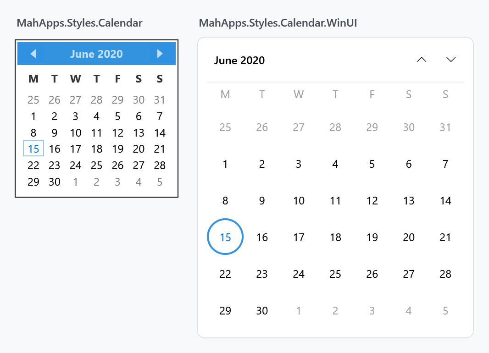
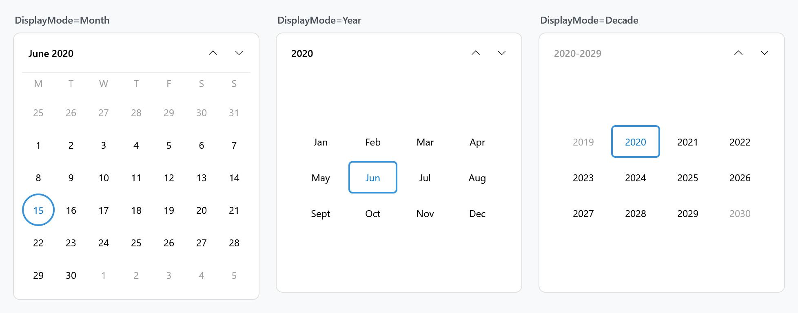
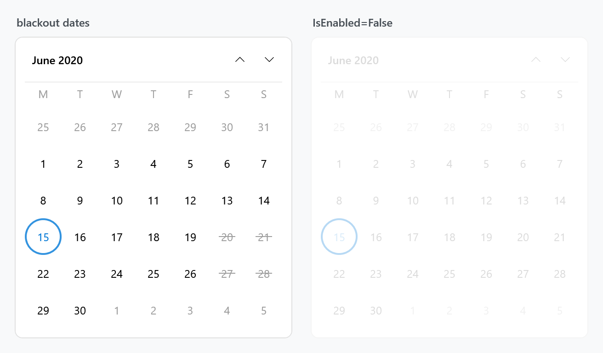
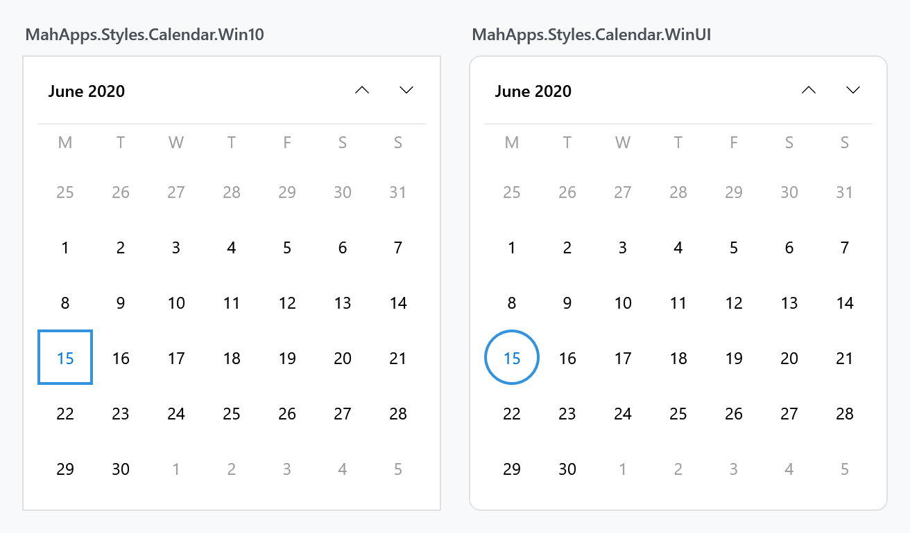

The Calendar is styled without any markup on your side, and the same style is what a DatePicker drops down. Because a calendar is assembled from four controls rather than one, restyling it is a matter of knowing which of the four draws the part you want to change.
The implicit style
Styles/Controls.xaml applies MahApps.Styles.Calendar to every Calendar. Merging that dictionary — which the quick start does — is all it takes:
<ResourceDictionary Source="pack://application:,,,/MahApps.Metro;component/Styles/Controls.xaml" />
Four controls, four styles
A Calendar hosts a CalendarItem, which lays out the header and the grid and fills that grid with CalendarDayButtons in month mode and CalendarButtons in year and decade mode. Each has its own style, and the Calendar style hands them down through three properties:
| Property | Style | Draws |
|---|---|---|
CalendarItemStyle |
MahApps.Styles.CalendarItem |
the frame: header bar, day-of-week titles, the grids |
CalendarDayButtonStyle |
MahApps.Styles.CalendarDayButton |
one day cell |
CalendarButtonStyle |
MahApps.Styles.CalendarButton |
one month or year cell |
So changing how a single day looks means replacing CalendarDayButtonStyle, not the whole calendar:
<Calendar CalendarDayButtonStyle="{StaticResource MyDayButton}" />
The header's three buttons are styled separately again, by MahApps.Styles.Button.Calendar.Previous, .Next and .Header, which the CalendarItem template references by key.
The three calendar styles
| Style | |
|---|---|
MahApps.Styles.Calendar.Base |
the frame and the three style properties, without a font |
MahApps.Styles.Calendar |
the base plus the control font and size; the implicit style |
MahApps.Styles.Calendar.DateTimePicker |
the base with a quieter border, for a picker's drop-down |
A WinUI look
The built-in calendar is the Metro design the library was named for: a solid accent header bar, bold day titles and square cells. Here is what the same control looks like with a WinUI-flavoured style beside it:

The right-hand one is MahApps.Styles.Calendar.WinUI, a drop-in dictionary this site ships as a downloadable file. It is not part of MahApps.Metro; it is a worked example of how far these four styles can be taken.
It is called WinUI rather than Win10 on purpose. Rounded corners and circular day cells are Fluent 2, the refresh that arrived with WinUI 2.6 and Windows 11. The Windows 10 era of Fluent was square throughout — which is what the library's existing MahApps.Styles.CheckBox.Win10 and RadioButton.Win10 follow, neither of which sets a corner radius. There is a square variant below.
What it changes:
- no accent header bar — the month button and two chevrons sit on the calendar's own background, as WinUI's
CalendarViewdoes - round day cells of a fixed 40×40, so the grid is even and the selection reads as a disc
- today is an accent-filled disc, a selected day an accent ring, and a day that is both keeps the fill and gains a contrasting ring
- hover and pressed are neutral greys, so the accent only ever means today or selected
- muted day-of-week titles with a hairline under the row
- rounded outer corners, and month and year cells as rounded rectangles
Every colour comes from the theme brushes, so it follows the accent and works in the light and dark themes.
Using it
Merge the dictionary and set the style by key:
<Application.Resources>
<ResourceDictionary>
<ResourceDictionary.MergedDictionaries>
<ResourceDictionary Source="pack://application:,,,/MahApps.Metro;component/Styles/Controls.xaml" />
<ResourceDictionary Source="pack://application:,,,/MahApps.Metro;component/Styles/Fonts.xaml" />
<ResourceDictionary Source="pack://application:,,,/MahApps.Metro;component/Styles/Themes/Light.Blue.xaml" />
<ResourceDictionary Source="Controls.Calendar.WinUI.xaml" />
</ResourceDictionary.MergedDictionaries>
</ResourceDictionary>
</Application.Resources>
<Calendar Style="{StaticResource MahApps.Styles.Calendar.WinUI}" />
To give a DatePicker the same drop-down, hand it to CalendarStyle:
<DatePicker CalendarStyle="{StaticResource MahApps.Styles.Calendar.WinUI}" />
And to make it the default for every calendar in the application, add a keyless style based on it:
<Style BasedOn="{StaticResource MahApps.Styles.Calendar.WinUI}" TargetType="{x:Type Calendar}" />
All three display modes
DisplayMode switches the grid between days, months and years. The same rules carry over: the cell holding the selection gets a ring, and the cell is a rounded rectangle rather than a disc.

The header button is disabled in decade mode — there is nothing above a decade to zoom out to — which is why it is dimmed in the third panel.
Blackout and disabled

A blacked-out date keeps its number and gets a line through it rather than the cross the built-in style draws, which reads better at the size WinUI cells are.
<Calendar Style="{StaticResource MahApps.Styles.Calendar.WinUI}">
<Calendar.BlackoutDates>
<CalendarDateRange Start="2020-06-20" End="2020-06-21" />
</Calendar.BlackoutDates>
</Calendar>
The square Windows 10 look
Windows 10's design language was square: no rounded corners anywhere, and a selected day marked by a rectangle rather than a disc. MahApps.Styles.Calendar.Win10 is that variant, in a second file that sits alongside the first.

It matches the naming and the flat look of the library's existing CheckBox.Win10 and RadioButton.Win10, so the three can be used together without the calendar looking out of period.
<ResourceDictionary Source="Controls.Calendar.Win10.xaml" />
<Calendar Style="{StaticResource MahApps.Styles.Calendar.Win10}" />
The Win10 file merges the WinUI one, so adding it brings both families in and you can pick per calendar.
The difference is one number
Writing the second style turned out to be a five-line job, because the two eras differ in nothing but the corner radius — the selection ring, the today fill, the hover greys and the layout are the same in both. Rather than repeat four templates, the radius reaches them through ControlsHelper.CornerRadius, and the Win10 dictionary sets it to zero:
<Style x:Key="MahApps.Styles.CalendarDayButton.Win10"
BasedOn="{StaticResource MahApps.Styles.CalendarDayButton.WinUI}"
TargetType="{x:Type CalendarDayButton}">
<Setter Property="mah:ControlsHelper.CornerRadius" Value="0" />
</Style>
That works in the other direction too — give any of these styles a radius of your own and the cells follow, without touching a template:
<Style BasedOn="{StaticResource MahApps.Styles.CalendarDayButton.WinUI}" TargetType="{x:Type CalendarDayButton}">
<Setter Property="mah:ControlsHelper.CornerRadius" Value="6" />
</Style>
The header buttons take their radius from the CalendarItem rather than carrying their own, so squaring the calendar squares them along with it.
What is inside the file
The dictionary defines only keyed resources and merges Controls.Calendar.xaml, so it can be dropped into an application on its own. It contains:
| Resource | |
|---|---|
MahApps.Styles.Calendar.WinUI |
the calendar, wiring up the three below |
MahApps.Styles.CalendarItem.WinUI |
header, day titles, separator, the two grids |
MahApps.Styles.CalendarDayButton.WinUI |
the round day cell |
MahApps.Styles.CalendarButton.WinUI |
the rounded month and year cell |
MahApps.Styles.Button.Calendar.Header.WinUI, .Previous.WinUI, .Next.WinUI |
the three header buttons |
MahApps.Sizes.CalendarDayButton.WinUI, three MahApps.CornerRadius.* |
the sizes, so they can be overridden in one place |
One thing worth knowing if you write a calendar style yourself: a CalendarDayButton has IsToday, IsSelected, IsInactive, IsBlackedOut and IsHighlighted, but a CalendarButton — the month and year cell — has no IsSelected. The property that says it holds the current selection is HasSelectedDays. A trigger on IsSelected there fails at load time with Property can not be null on Trigger.
Related
The DatePicker page covers how the calendar reaches a picker's drop-down and what else that control's style sets.